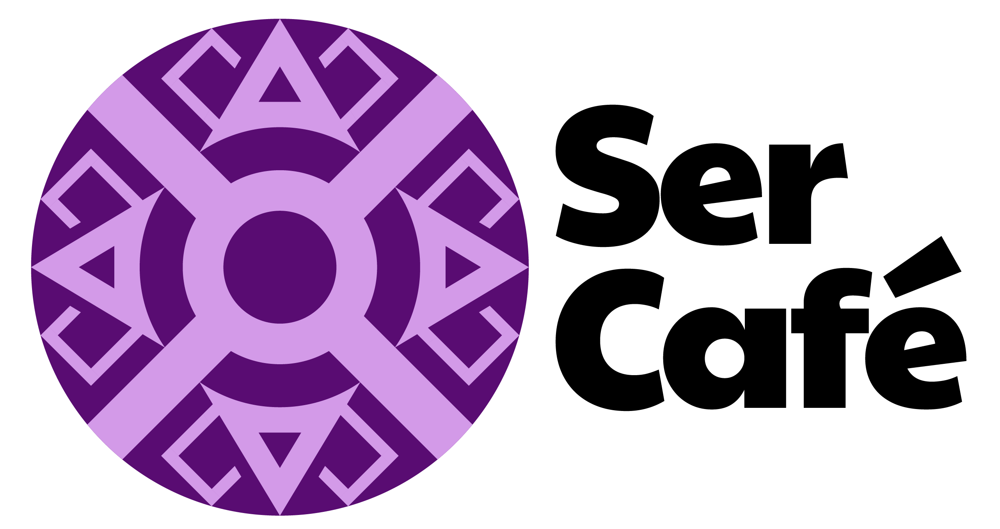
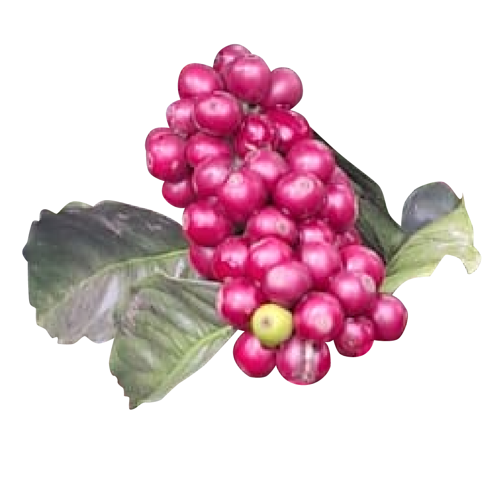
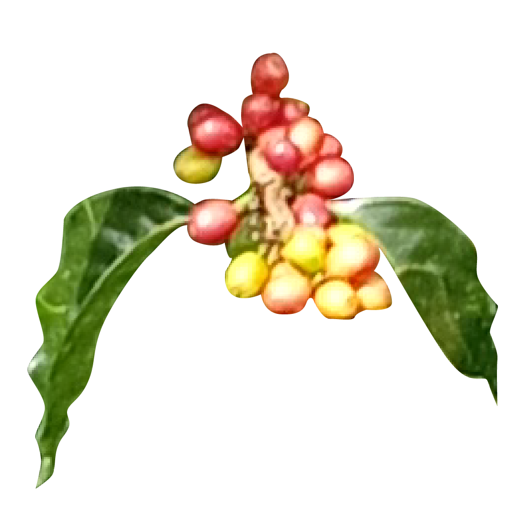

Cada Café cuenta una historia. Seleccionamos granos cultivados en las montañas colombianas por caficultores comprometidos con la calidad, resaltando las características únicas que el origen, la variedad, la altura y el proceso aportan a cada taza.

La Florida, Nariño
1.978 msnm
Castillo Sur
Lavado
Chocolate, caramelo, naranja, frutos negros
Chocolate, caramelo
Cítrica alta
Media

Urrao, Antioquia
1.958 msnm
Chiroso
Lavado
Panela, miel, naranja, durazno
Notas frutales a naranja, durazno, aromatico a limoncillo
Cítrica alta
Media